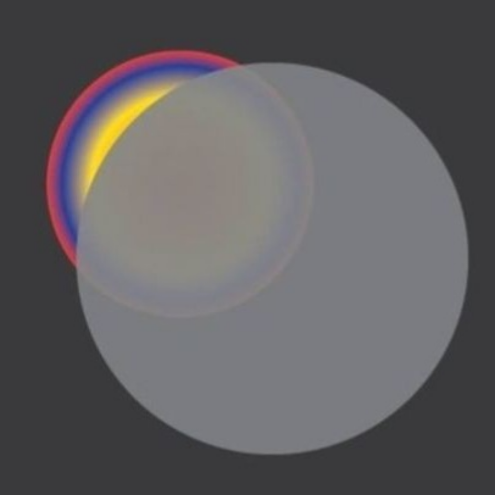

CNNs are a type of deep learning technique commonly used for image recognition tasks. They work by learning patterns and features from images through layers of filters. CNNs excel at recognizing spatial patterns, making them effective for tasks like object detection and classification in images. They are widely used in computer vision applications.